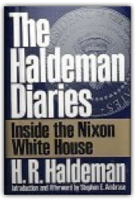
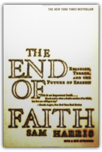
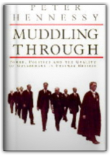

Journalist Peter Godwin has covered wars. As a soldier, he's fought them. But nothing prepared him for the surreal mix of desperation and hope he encountered when he returned to Zimbabwe, his broken homeland.
"[An] extraordinary book. . . . Mr. Gould is an exceptional combination of scientist and science writer. . . . He is thus exceptionally well placed to tell these stories, and he tells them with fervor and intelligence."—James Gleick, New York Times Book ReviewHigh in the Canadian Rockies is a small limestone quarry formed 530 million years ago called the Burgess Shale. It hold the remains of an ancient sea where dozens of strange creatures lived—a forgotten corner of evolution preserved in awesome detail. In this book Stephen Jay Gould explores what the Burgess Shale tells us about evolution and the nature of history.
Orient Express follows five or six characters and exposes them psychologically as they travel along the famed Orient Express train line. In a thumbnail the characters are a Jewish businessman, an exiled communist leader, a lesbian newspaper reporter, A German criminal, and a plain, working-class dancing girl from London.
Torn between conflicting identities — Arabs in the eyes of Jews, and Israelis in the eyes of the Palestinians — the Israeli Arabs live in a painful dilemma. Grossman's account of his personal journey into their world is the story of this painful, convoluted state of affairs, about ferment beneath the surface, and an intensifying bitterness that led to the current open conflict.
In 1993, shortly after his inauguration, new President Bill Clinton nominated his old friend and classmate Lani Guinier to the prestigious and crucial post of Assistant Attorney General for Civil Rights.
This contemporary classic, the story of a Palestinian who becomes a citizen of Israel, combines fact and fantasy, tragedy and comedy. Saeed is the comic hero, the luckless fool, whose tale tells of aggression and resistance, terror and heroism, reason and loyalty that typify the hardships and struggles of Arabs in Israel. An informer for the Zionist state, his stupidity, candor, and cowardice make him more of a victim than a villain; but in a series of tragicomic episodes, he is gradually transformed from a disaster-haunted, gullible collaborator into a Palestinian-no hero still, but a simple man intent on survival and, perhaps, happiness.

The Haldeman Diaries: Inside the Nixon White House
H. R. Haldeman
Never-before-published diaries from Richard Nixon's late Chief of Staff offer a meticulously detailed behind-the-scenes account of his years at the White House that included Agnew's resignation, Cambodian bombings, and Watergate. |

The End of Faith: Religion, Terror, and the Future of Reason
Sam Harris
Natalie Angier wrote in The New York Times: "The End of Faith articulates the dangers and absurdities of organized religion so fiercely and so fearlessly that I felt relieved as I read it, vindicated....Harris writes what a sizable number of us think, but few are willing to say."This important and timely book delivers a startling analysis of the clash of faith and reason in today's world. Harris offers a vivid historical tour of mankind's willingness to suspend reason in favor of religious beliefs, even when those beliefs are used to justify harmful behavior and sometimes-heinous crimes. He asserts that in the shadow of weapons of mass destruction, we can no longer tolerate views that pit one true god against another. Most controversially, he argues that we cannot afford moderate lip service to religion; an accommodation that only blinds us to the real perils of fundamentalism. While warning against the encroachment of organized religion into world politics, Harris also draws on new evidence from neuroscience and insights from philosophy to explore spirituality as a biological, brain-based need. He calls on us to invoke that need in taking a secular humanistic approach to solving the problems of this world.
“Thousands of people have written to tell me that I am wrong not to believe in God. The most hostile of these communications have come from Christians. This is ironic, as Christians generally imagine that no faith imparts the virtues of love and forgiveness more effectively than their own. The truth is that many who claim to be transformed by Christ’s love are deeply, even murderously, intolerant of criticism. While we may want to ascribe this to human nature, it is clear that such hatred draws considerable support from the Bible. How do I know this? The most disturbed of my correspondents always cite chapter and verse.”
Catch-22 is like no other novel. It is one of the funniest books ever written, a keystone work in American literature, and even added a new term to the dictionary.
Bruce Gold, a middle-aged, Jewish professor of English literature, finds himself on the brink of a golden career in politics — and not a moment too soon, as Gold yearns for an opportunity to transform a less-than-picture-perfect life: His children think little of him, his intimidating father endlessly bullies him, and his wife is so oblivious that she doesn't even notice he's left her. As funny as it is sad, Good as Gold is a story of children grown up, parents grown old, and friends and lovers grown apart — a story that is inimitably Heller.

Muddling Through: Power, Politics and the Quality of Government in Postwar Britain
Peter Hennessy
This volume collates the journalism of Peter Hennessy, illuminating key themes of contemporary political history. It includes high politics and the hidden Whitehall, from Suez to the Scott Report, and portraits of post-war prime ministers with whom he worked closely. |

Fogus
Collection Total:
193 Items
193 Items
Last Updated:
Dec 16, 2011
Dec 16, 2011
 Made with Delicious Library
Made with Delicious Library